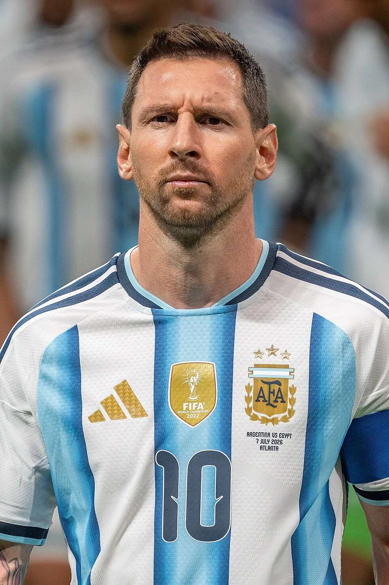

The profile
Lionel Messi
Lionel Messi was born in Rosario, Argentina, and moved to Spain while still a boy to join Barcelona’s academy. That move placed him in the club system where he would spend most of his life in football.
He became Barcelona's record scorer and creative leader before spells with Paris Saint-Germain and Inter Miami. Usually starting from the right or between the lines, he combines close control with passes that open crowded defences. His left foot can shape a move, deliver its final ball or finish it himself.
Messi had already led Argentina to the 2014 final, but the 2022 tournament completed his country's long pursuit of another title. After an opening defeat, his goals and chance creation helped Argentina recover and progress through the knockout rounds. He scored twice in the final against France, then converted in the shootout as Argentina won its third World Cup; he was named the tournament's best player.
2006Germany
Quarter-finals
Group C Argentina6 : 0Serbia and Montenegro
- Maxi RODRIGUEZ6′
- Esteban CAMBIASSO31′
- Maxi RODRIGUEZ41′
- Hernan CRESPO78′
- Carlos TEVEZ84′
- Lionel MESSI88′
Argentinahome
Starting lineup
- Roberto ABBONDANZIERI
- Roberto AYALA
- Juan SORIN
- Gabriel HEINZE
- Nicolas BURDISSO
- Javier MASCHERANO
- Juan RIQUELME
- Maxi RODRIGUEZ
- Luis GONZALEZ
- Javier SAVIOLA
- Hernan CRESPO
Substitutions
- 17′Esteban CAMBIASSO on · Luis GONZALEZ off
- 59′Carlos TEVEZ on · Javier SAVIOLA off
- 75′Lionel MESSI on · Maxi RODRIGUEZ off
Serbia and Montenegroaway
Starting lineup
- Dragoslav JEVRIC
- Goran GAVRANCIC
- Milan DUDIC
- Mladen KRSTAJIC
- Igor DULJAJ
- Ognjen KOROMAN
- Dejan STANKOVIC
- Predrag DJORDJEVIC
- Albert NADJ
- Mateja KEZMAN
- Savo MILOSEVIC
Substitutions
- 45+1′Ivan ERGIC on · Albert NADJ off
- 50′Danijel LJUBOJA on · Ognjen KOROMAN off
- 70′Zvonimir VUKIC on · Savo MILOSEVIC off
Group C Netherlands0 : 0Argentina
Netherlandshome
Starting lineup
- Edwin VAN DER SAR
- Kew JALIENS
- Khalid BOULAHROUZ
- Andre OOIJER
- Tim DE CLER
- Phillip COCU
- Rafael VAN DER VAART
- Wesley SNEIJDER
- Dirk KUYT
- Ruud VAN NISTELROOIJ
- Robin VAN PERSIE
Substitutions
- 56′Ryan BABEL on · Ruud VAN NISTELROOIJ off
- 67′Denny LANDZAAT on · Robin VAN PERSIE off
- 86′Hedwiges MADURO on · Wesley SNEIJDER off
Argentinaaway
Starting lineup
- Roberto ABBONDANZIERI
- Roberto AYALA
- Gabriel MILITO
- Leandro CUFRE
- Nicolas BURDISSO
- Esteban CAMBIASSO
- Javier MASCHERANO
- Juan RIQUELME
- Maxi RODRIGUEZ
- Carlos TEVEZ
- Lionel MESSI
Substitutions
- 24′Fabricio COLOCCINI on · Nicolas BURDISSO off
- 70′Julio CRUZ on · Lionel MESSI off
- 80′Pablo AIMAR on · Juan RIQUELME off
Round of 16 Argentina2 : 1Mexico
- Hernan CRESPO10′
- Maxi RODRIGUEZ98′
- Rafael MARQUEZ6′
Argentinahome
Starting lineup
- Roberto ABBONDANZIERI
- Roberto AYALA
- Juan SORIN
- Gabriel HEINZE
- Lionel SCALONI
- Esteban CAMBIASSO
- Javier MASCHERANO
- Juan RIQUELME
- Maxi RODRIGUEZ
- Javier SAVIOLA
- Hernan CRESPO
Substitutions
- 75′Carlos TEVEZ on · Hernan CRESPO off
- 76′Pablo AIMAR on · Esteban CAMBIASSO off
- 84′Lionel MESSI on · Javier SAVIOLA off
Mexicoaway
Starting lineup
- Oswaldo SANCHEZ
- Carlos SALCIDO
- Rafael MARQUEZ
- Ricardo OSORIO
- Jose CASTRO
- Mario MENDEZ
- Andres GUARDADO
- Pavel PARDO
- Jared BORGETTI
- Ramon MORALES
- Jose FONSECA
Substitutions
- 38′Gerardo TORRADO on · Pavel PARDO off
- 66′Gonzalo PINEDA on · Andres GUARDADO off
- 74′ZINHA on · Ramon MORALES off
2010South Africa
Quarter-finals
Group B Argentina1 : 0Nigeria
- Gabriel HEINZE5′
Argentinahome
Starting lineup
- Sergio ROMERO
- Martin DEMICHELIS
- Gabriel HEINZE
- Walter SAMUEL
- Angel DI MARIA
- Juan VERON
- Javier MASCHERANO
- Jonas GUTIERREZ
- Gonzalo HIGUAIN
- Lionel MESSI
- Carlos TEVEZ
Substitutions
- 73′Maxi RODRIGUEZ on · Juan VERON off
- 78′Diego MILITO on · Gonzalo HIGUAIN off
- 84′Nicolas BURDISSO on · Angel DI MARIA off
Nigeriaaway
Starting lineup
- Vincent ENYEAMA
- Joseph YOBO
- Taye Ismaila Taïwo
- Danny SHITTU
- Chidi ODIAH
- Sani KAITA
- Lukman HARUNA
- Dickson ETUHU
- Yakubu AYEGBENI
- Victor OBINNA
- Chinedu OGBUKE OBASI
Substitutions
- 51′Obafemi MARTINS on · Victor OBINNA off
- 59′Peter ODEMWINGIE on · Chinedu OGBUKE OBASI off
- 74′Kalu UCHE on · Taye Ismaila Taïwo off
Group B Argentina4 : 1South Korea
- PARK Chuyoung16′ · own goal
- Gonzalo HIGUAIN32′
- Gonzalo HIGUAIN75′
- Gonzalo HIGUAIN79′
- LEE Chungyong45′
Argentinahome
Starting lineup
- Sergio ROMERO
- Martin DEMICHELIS
- Gabriel HEINZE
- Walter SAMUEL
- Angel DI MARIA
- Javier MASCHERANO
- Jonas GUTIERREZ
- Maxi RODRIGUEZ
- Gonzalo HIGUAIN
- Lionel MESSI
- Carlos TEVEZ
Substitutions
- 22′Nicolas BURDISSO on · Walter SAMUEL off
- 74′Sergio AGUERO on · Carlos TEVEZ off
- 81′Mario BOLATTI on · Gonzalo HIGUAIN off
South Koreaaway
Starting lineup
- JUNG Sungryong
- OH Beom Seok
- CHO Yong Hyung
- LEE Youngpyo
- LEE Jung Soo
- PARK Jisung
- KIM Jung Woo
- KI Sungyueng
- LEE Chungyong
- YEOM Ki Hun
- PARK Chuyoung
Substitutions
- 45′KIM Namil on · KI Sungyueng off
- 80′LEE Donggook on · PARK Chuyoung off
Group B Greece0 : 2Argentina
- Martin DEMICHELIS76′
- Martin PALERMO88′
Greecehome
Starting lineup
- Alexandros TZORVAS
- Vangelis MORAS
- Avraam PAPADOPOULOS
- Loukas VYNTRA
- Vasileios TOROSIDIS
- Sotirios KYRGIAKOS
- Sokratis Papastathopoulos
- Alexandros TZIOLIS
- Georgios KARAGOUNIS
- Konstantinos KATSOURANIS
- Georgios SAMARAS
Substitutions
- 45′Nikos SPIROPOULOS on · Georgios KARAGOUNIS off
- 53′Sotiris NINIS on · Konstantinos KATSOURANIS off
- 54′Christos PATSATZOGLOU on · Vasileios TOROSIDIS off
Argentinaaway
Starting lineup
- Sergio ROMERO
- Martin DEMICHELIS
- Clemente RODRIGUEZ
- Nicolas BURDISSO
- Nicolas OTAMENDI
- Mario BOLATTI
- Juan VERON
- Maxi RODRIGUEZ
- Lionel MESSI
- Sergio AGUERO
- Diego MILITO
Substitutions
- 62′Angel DI MARIA on · Maxi RODRIGUEZ off
- 76′Javier PASTORE on · Sergio AGUERO off
- 79′Martin PALERMO on · Diego MILITO off
Round of 16 Argentina3 : 1Mexico
- Carlos TEVEZ25′
- Gonzalo HIGUAIN32′
- Carlos TEVEZ51′
- Javier HERNANDEZ70′
Argentinahome
Starting lineup
- Sergio ROMERO
- Martin DEMICHELIS
- Nicolas BURDISSO
- Gabriel HEINZE
- Nicolas OTAMENDI
- Angel DI MARIA
- Javier MASCHERANO
- Maxi RODRIGUEZ
- Gonzalo HIGUAIN
- Lionel MESSI
- Carlos TEVEZ
Substitutions
- 68′Juan VERON on · Carlos TEVEZ off
- 78′Jonas GUTIERREZ on · Angel DI MARIA off
- 86′Javier PASTORE on · Maxi RODRIGUEZ off
Mexicoaway
Starting lineup
- Oscar PEREZ
- Francisco RODRIGUEZ
- Carlos SALCIDO
- Rafael MARQUEZ
- Ricardo OSORIO
- Efrain JUAREZ
- Gerardo TORRADO
- Andres GUARDADO
- Javier HERNANDEZ
- Giovani DOS SANTOS
- Adolfo BAUTISTA
Substitutions
- 45′Pablo BARRERA on · Adolfo BAUTISTA off
- 60′Guillermo FRANCO on · Andres GUARDADO off
Quarterfinal Germany4 : 0Argentina
- MUELLER Thomas2′
- Miroslav KLOSE67′
- Arne FRIEDRICH73′
- Miroslav KLOSE88′
Germanyhome
Starting lineup
- NEUER Manuel
- Arne FRIEDRICH
- Philipp LAHM
- Per MERTESACKER
- BOATENG Jerome
- Sami KHEDIRA
- Bastian SCHWEINSTEIGER
- Mesut OEZIL
- MUELLER Thomas
- Lukas PODOLSKI
- Miroslav KLOSE
Substitutions
- 71′Marcell JANSEN on · BOATENG Jerome off
- 76′Toni Kroos on · Sami KHEDIRA off
- 83′Piotr TROCHOWSKI on · MUELLER Thomas off
Argentinaaway
Starting lineup
- Sergio ROMERO
- Martin DEMICHELIS
- Nicolas BURDISSO
- Gabriel HEINZE
- Nicolas OTAMENDI
- Angel DI MARIA
- Javier MASCHERANO
- Maxi RODRIGUEZ
- Gonzalo HIGUAIN
- Lionel MESSI
- Carlos TEVEZ
Substitutions
- 69′Javier PASTORE on · Nicolas OTAMENDI off
- 74′Sergio AGUERO on · Angel DI MARIA off
2014Brazil
Runner-up
Group F Argentina2 : 1Bosnia and Herzegovina
- Sead KOLASINAC2′ · own goal
- Lionel MESSI64′
- Vedad IBISEVIC84′
Argentinahome
Starting lineup
- Sergio ROMERO
- Ezequiel GARAY
- Hugo CAMPAGNARO
- Pablo ZABALETA
- Marcos ROJO
- Federico FERNANDEZ
- Angel DI MARIA
- Maxi RODRIGUEZ
- Javier MASCHERANO
- Lionel MESSI
- Sergio AGUERO
Substitutions
- 45′Gonzalo HIGUAIN on · Maxi RODRIGUEZ off
- 45′Fernando GAGO on · Hugo CAMPAGNARO off
- 86′Lucas BIGLIA on · Sergio AGUERO off
Bosnia and Herzegovinaaway
Starting lineup
- Asmir BEGOVIC
- Ermin BICAKCIC
- Emir SPAHIC
- Sead KOLASINAC
- Muhamed BESIC
- Miralem PJANIC
- Zvjezdan MISIMOVIC
- Mensur MUJDZA
- Senad LULIC
- Izet HAJROVIC
- Edin DZEKO
Substitutions
- 68′Vedad IBISEVIC on · Mensur MUJDZA off
- 70′Edin VISCA on · Izet HAJROVIC off
- 73′Haris Medunjanin on · Zvjezdan MISIMOVIC off
Group F Argentina1 : 0Iran
- Lionel MESSI90′
Argentinahome
Starting lineup
- Sergio ROMERO
- Ezequiel GARAY
- Pablo ZABALETA
- Marcos ROJO
- Federico FERNANDEZ
- Fernando GAGO
- Angel DI MARIA
- Javier MASCHERANO
- Gonzalo HIGUAIN
- Lionel MESSI
- Sergio AGUERO
Substitutions
- 75′Ezequiel LAVEZZI on · Sergio AGUERO off
- 76′Rodrigo PALACIO on · Gonzalo HIGUAIN off
- 90+3′Lucas BIGLIA on · Angel DI MARIA off
Iranaway
Starting lineup
- Alireza HAGHIGHI
- Jalal HOSSEINI
- Amir Hossein Sadeghi
- Pejman MONTAZERI
- Mehrdad POOLADI
- Ehsan HAJI SAFI
- Javad NEKOUNAM
- Andranik TIMOTIAN
- Masoud SHOJAEI
- Reza GHOOCHANNEJHAD
- Ashkan DEJAGAH
Substitutions
- 75′Khosro HEYDARI on · Masoud SHOJAEI off
- 84′Alireza JAHANBAKHSH on · Ashkan DEJAGAH off
- 87′Reza HAGHIGHI on · Ehsan HAJI SAFI off
Group F Nigeria2 : 3Argentina
- Ahmed Musa3′
- Ahmed Musa46′
- Lionel MESSI2′
- Lionel MESSI45′
- Marcos ROJO49′
Nigeriahome
Starting lineup
- Vincent ENYEAMA
- Joseph YOBO
- Efe AMBROSE
- Juwon OSHANIWA
- Kenneth OMERUO
- John Obi MIKEL
- Ogenyi ONAZI
- Ahmed Musa
- Peter ODEMWINGIE
- Emmanuel EMENIKE
- Michael Babatunde
Substitutions
- 65′Okechukwu UCHEBO on · Michael Babatunde off
- 79′Uche NWOFOR on · Peter ODEMWINGIE off
Argentinaaway
Starting lineup
- Sergio ROMERO
- Ezequiel GARAY
- Pablo ZABALETA
- Marcos ROJO
- Federico FERNANDEZ
- Fernando GAGO
- Angel DI MARIA
- Javier MASCHERANO
- Gonzalo HIGUAIN
- Lionel MESSI
- Sergio AGUERO
Substitutions
- 37′Ezequiel LAVEZZI on · Sergio AGUERO off
- 62′Ricky ÁLVAREZ on · Lionel MESSI off
- 90′Lucas BIGLIA on · Gonzalo HIGUAIN off
Round of 16 Argentina1 : 0Switzerland
- Angel DI MARIA117′
Argentinahome
Starting lineup
- Sergio ROMERO
- Ezequiel GARAY
- Pablo ZABALETA
- Marcos ROJO
- Federico FERNANDEZ
- Fernando GAGO
- Angel DI MARIA
- Javier MASCHERANO
- Gonzalo HIGUAIN
- Lionel MESSI
- Ezequiel LAVEZZI
Substitutions
- 73′Rodrigo PALACIO on · Ezequiel LAVEZZI off
- 105′Lucas BIGLIA on · Fernando GAGO off
- 105′José BASANTA on · Marcos ROJO off
Switzerlandaway
Starting lineup
- Diego BENAGLIO
- Stephan LICHTSTEINER
- Ricardo RODRIGUEZ
- Johan DJOUROU
- Fabian SCHAER
- Gokhan INLER
- Granit Xhaka
- Valon BEHRAMI
- Xherdan Shaqiri
- Admir MEHMEDI
- Josip Drmic
Substitutions
- 65′Gelson FERNANDES on · Granit Xhaka off
- 81′Haris SEFEROVIC on · Josip Drmic off
- 112′Blerim DZEMAILI on · Admir MEHMEDI off
Quarterfinal Argentina1 : 0Belgium
- Gonzalo HIGUAIN7′
Argentinahome
Starting lineup
- Sergio ROMERO
- Ezequiel GARAY
- Pablo ZABALETA
- Martin DEMICHELIS
- José BASANTA
- Lucas BIGLIA
- Angel DI MARIA
- Javier MASCHERANO
- Gonzalo HIGUAIN
- Lionel MESSI
- Ezequiel LAVEZZI
Substitutions
- 32′Enzo PEREZ on · Angel DI MARIA off
- 70′Rodrigo PALACIO on · Ezequiel LAVEZZI off
- 80′Fernando GAGO on · Gonzalo HIGUAIN off
Belgiumaway
Starting lineup
- Thibaut COURTOIS
- Toby ALDERWEIRELD
- Vincent KOMPANY
- Jan VERTONGHEN
- Daniel VAN BUYTEN
- Axel WITSEL
- Kevin De Bruyne
- Marouane FELLAINI
- Eden HAZARD
- Kevin MIRALLAS
- Divock ORIGI
Substitutions
- 58′Romelu LUKAKU on · Divock ORIGI off
- 59′Dries Mertens on · Kevin MIRALLAS off
- 74′Nacer Chadli on · Eden HAZARD off
Semifinal Netherlands0 : 0Argentina
Netherlandshome
Starting lineup
- Jasper Cillessen
- Ron VLAAR
- Stefan de Vrij
- Bruno MARTINS INDI
- Daley Blind
- Nigel DE JONG
- Wesley SNEIJDER
- Georginio WIJNALDUM
- Robin VAN PERSIE
- Arjen ROBBEN
- Dirk KUYT
Substitutions
- 45′Daryl JANMAAT on · Bruno MARTINS INDI off
- 61′Jordy Clasie on · Nigel DE JONG off
- 95′Klaas Jan HUNTELAAR on · Robin VAN PERSIE off
Argentinaaway
Starting lineup
- Sergio ROMERO
- Ezequiel GARAY
- Pablo ZABALETA
- Martin DEMICHELIS
- Marcos ROJO
- Lucas BIGLIA
- Enzo PEREZ
- Javier MASCHERANO
- Gonzalo HIGUAIN
- Lionel MESSI
- Ezequiel LAVEZZI
Substitutions
- 80′Rodrigo PALACIO on · Enzo PEREZ off
- 81′Sergio AGUERO on · Gonzalo HIGUAIN off
- 100′Maxi RODRIGUEZ on · Ezequiel LAVEZZI off
Final Germany1 : 0Argentina
- Mario GOETZE112′
Germanyhome
Starting lineup
- NEUER Manuel
- Benedikt HOEWEDES
- Mats Hummels
- BOATENG Jerome
- Bastian SCHWEINSTEIGER
- Mesut OEZIL
- Philipp LAHM
- Toni Kroos
- Christoph Kramer
- Miroslav KLOSE
- MUELLER Thomas
Substitutions
- 30′Andre SCHUERRLE on · Christoph Kramer off
- 87′Mario GOETZE on · Miroslav KLOSE off
- 119′Per MERTESACKER on · Mesut OEZIL off
Argentinaaway
Starting lineup
- Sergio ROMERO
- Ezequiel GARAY
- Pablo ZABALETA
- Martin DEMICHELIS
- Marcos ROJO
- Lucas BIGLIA
- Enzo PEREZ
- Javier MASCHERANO
- Gonzalo HIGUAIN
- Lionel MESSI
- Ezequiel LAVEZZI
Substitutions
- 45′Sergio AGUERO on · Ezequiel LAVEZZI off
- 77′Rodrigo PALACIO on · Gonzalo HIGUAIN off
- 85′Fernando GAGO on · Enzo PEREZ off
2018Russia
Round of 16
Group D Argentina1 : 1Iceland
- Sergio AGUERO19′
- Alfred FINNBOGASON23′
Argentinahome
Starting lineup
- Wilfredo CABALLERO
- Nicolas TAGLIAFICO
- Marcos ROJO
- Nicolas OTAMENDI
- Eduardo SALVIO
- Lucas BIGLIA
- Lionel MESSI
- Angel DI MARIA
- Maximiliano MEZA
- Javier MASCHERANO
- Sergio AGUERO
Substitutions
- 54′Ever BANEGA on · Lucas BIGLIA off
- 75′Cristian PAVON on · Angel DI MARIA off
- 84′Gonzalo HIGUAIN on · Maximiliano MEZA off
Icelandaway
Starting lineup
- Hannes HALLDORSSON
- Birkir SAEVARSSON
- Ragnar SIGURDSSON
- Kari ARNASON
- Hordur MAGNUSSON
- Johann GUDMUNDSSON
- Birkir BJARNASON
- Aron GUNNARSSON
- Emil HALLFREDSSON
- Gylfi SIGURDSSON
- Alfred FINNBOGASON
Substitutions
- 63′Rurik GISLASON on · Johann GUDMUNDSSON off
- 76′Ari SKULASON on · Aron GUNNARSSON off
- 89′Bjorn SIGURDARSON on · Alfred FINNBOGASON off
Group D Argentina0 : 3Croatia
- Ante REBIC53′
- Luka MODRIC80′
- Ivan RAKITIC90+1′
Argentinahome
Starting lineup
- Wilfredo CABALLERO
- Gabriel MERCADO
- Nicolas TAGLIAFICO
- Nicolas OTAMENDI
- Marcos ACUNA
- Javier MASCHERANO
- Enzo PEREZ
- Eduardo SALVIO
- Lionel MESSI
- Maximiliano MEZA
- Sergio AGUERO
Substitutions
- 54′Gonzalo HIGUAIN on · Sergio AGUERO off
- 56′Cristian PAVON on · Eduardo SALVIO off
- 68′Paulo DYBALA on · Enzo PEREZ off
Croatiaaway
Starting lineup
- Danijel SUBASIC
- Sime VRSALJKO
- Ivan STRINIC
- Dejan LOVREN
- Domagoj VIDA
- Ivan PERISIC
- Ivan RAKITIC
- Luka MODRIC
- Marcelo BROZOVIC
- Ante REBIC
- Mario MANDZUKIC
Substitutions
- 57′Andrej KRAMARIC on · Ante REBIC off
- 82′Mateo KOVACIC on · Ivan PERISIC off
- 90+2′Vedran CORLUKA on · Mario MANDZUKIC off
Group D Nigeria1 : 2Argentina
- Victor MOSES51′ · pen.
- Lionel MESSI14′
- Marcos ROJO86′
Nigeriahome
Starting lineup
- Francis UZOHO
- William EKONG
- Leon BALOGUN
- Kenneth OMERUO
- Bryan IDOWU
- Wilfred NDIDI
- Oghenekaro ETEBO
- John Obi MIKEL
- Victor MOSES
- Ahmed MUSA
- Kelechi IHEANACHO
Substitutions
- 46′Odion IGHALO on · Kelechi IHEANACHO off
- 90′Alex IWOBI on · Kenneth OMERUO off
- 90+2′Simeon NWANKWO on · Ahmed MUSA off
Argentinaaway
Starting lineup
- Franco ARMANI
- Gabriel MERCADO
- Nicolas TAGLIAFICO
- Marcos ROJO
- Nicolas OTAMENDI
- Ever BANEGA
- Javier MASCHERANO
- Enzo PEREZ
- Gonzalo HIGUAIN
- Lionel MESSI
- Angel DI MARIA
Substitutions
- 61′Cristian PAVON on · Enzo PEREZ off
- 72′Maximiliano MEZA on · Angel DI MARIA off
- 80′Sergio AGUERO on · Nicolas TAGLIAFICO off
Round of 16 France4 : 3Argentina
- Antoine GRIEZMANN13′ · pen.
- Benjamin PAVARD57′
- Kylian MBAPPE64′
- Kylian MBAPPE68′
- Angel DI MARIA41′
- Gabriel MERCADO48′
- Sergio AGUERO90+3′
Francehome
Starting lineup
- Hugo LLORIS
- Benjamin PAVARD
- Raphael VARANE
- Samuel UMTITI
- Lucas HERNANDEZ
- Paul POGBA
- Antoine GRIEZMANN
- Kylian MBAPPE
- Ngolo KANTE
- Blaise MATUIDI
- Olivier GIROUD
Substitutions
- 75′Corentin TOLISSO on · Blaise MATUIDI off
- 83′Nabil FEKIR on · Antoine GRIEZMANN off
- 89′Florian THAUVIN on · Kylian MBAPPE off
Argentinaaway
Starting lineup
- Franco ARMANI
- Gabriel MERCADO
- Nicolas TAGLIAFICO
- Marcos ROJO
- Nicolas OTAMENDI
- Ever BANEGA
- Javier MASCHERANO
- Enzo PEREZ
- Lionel MESSI
- Angel DI MARIA
- Cristian PAVON
Substitutions
- 46′Federico FAZIO on · Marcos ROJO off
- 66′Sergio AGUERO on · Enzo PEREZ off
- 75′Maximiliano MEZA on · Cristian PAVON off
2022Qatar
Champion
Group C Argentina1 : 2Saudi Arabia
- Lionel MESSI10′ · pen.
- SALEH ALSHEHRI48′
- SALEM ALDAWSARI53′
Argentinahome
Starting lineup
- Emiliano MARTINEZ
- Nicolas TAGLIAFICO
- Cristian ROMERO
- Nicolas OTAMENDI
- Nahuel MOLINA
- Leandro PAREDES
- Rodrigo DE PAUL
- Angel DI MARIA
- Alejandro GOMEZ
- Lionel MESSI
- Lautaro MARTINEZ
Substitutions
- 59′Lisandro MARTINEZ on · Cristian ROMERO off
- 59′Enzo FERNANDEZ on · Leandro PAREDES off
- 59′Julian ALVAREZ on · Alejandro GOMEZ off
- 71′Marcos ACUNA on · Nicolas TAGLIAFICO off
Saudi Arabiaaway
Starting lineup
- MOHAMMED ALOWAIS
- ALI ALBULAYHI
- SAUD ABDULHAMID
- YASSER ALSHAHRANI
- Hassan ALTAMBAKTI
- SALMAN ALFARAJ
- ABDULELAH ALMALKI
- MOHAMED KANNO
- FERAS ALBRIKAN
- SALEM ALDAWSARI
- SALEH ALSHEHRI
Substitutions
- 45+4′NAWAF AL ABID on · SALMAN ALFARAJ off
- 78′SULTAN ALGHANNAM on · SALEH ALSHEHRI off
- 89′HAITHAM ASIRI on · FERAS ALBRIKAN off
- 89′Abdulelah ALAMRI on · NAWAF AL ABID off
- 90+9′MOHAMMED ALBURAYK on · YASSER ALSHAHRANI off
Group C Argentina2 : 0Mexico
- Lionel MESSI64′
- Enzo FERNANDEZ87′
Argentinahome
Starting lineup
- Emiliano MARTINEZ
- Gonzalo MONTIEL
- Marcos ACUNA
- Nicolas OTAMENDI
- Lisandro MARTINEZ
- Rodrigo DE PAUL
- Angel DI MARIA
- RODRIGUEZ GUIDO
- Alexis MAC ALLISTER
- Lionel MESSI
- Lautaro MARTINEZ
Substitutions
- 57′Enzo FERNANDEZ on · RODRIGUEZ GUIDO off
- 63′Julian ALVAREZ on · Lautaro MARTINEZ off
- 63′Nahuel MOLINA on · Gonzalo MONTIEL off
- 69′Exequiel PALACIOS on · Alexis MAC ALLISTER off
- 69′Cristian ROMERO on · Angel DI MARIA off
Mexicoaway
Starting lineup
- Guillermo OCHOA
- Nestor ARAUJO
- Cesar MONTES
- Hector MORENO
- Jesus GALLARDO
- Kevin ALVAREZ
- Hector HERRERA
- Andres GUARDADO
- Luis CHAVEZ
- Alexis VEGA
- Hirving LOZANO
Substitutions
- 42′Erick GUTIERREZ on · Andres GUARDADO off
- 66′Uriel ANTUNA on · Alexis VEGA off
- 66′Raul JIMENEZ on · Kevin ALVAREZ off
- 73′Roberto ALVARADO on · Hirving LOZANO off
Group C Poland0 : 2Argentina
- Alexis MAC ALLISTER46′
- Julian ALVAREZ67′
Polandhome
Starting lineup
- Wojciech SZCZESNY
- Matty CASH
- Jakub KIWIOR
- Kamil GLIK
- Bartosz BERESZYNSKI
- Krystian BIELIK
- Grzegorz KRYCHOWIAK
- Karol SWIDERSKI
- Piotr ZIELINSKI
- Przemyslaw FRANKOWSKI
- Robert LEWANDOWSKI
Substitutions
- 46′Jakub KAMINSKI on · Przemyslaw FRANKOWSKI off
- 46′Michal SKORAS on · Karol SWIDERSKI off
- 62′Damian SZYMANSKI on · Krystian BIELIK off
- 72′Artur JEDRZEJCZYK on · Bartosz BERESZYNSKI off
- 83′Krzysztof PIATEK on · Grzegorz KRYCHOWIAK off
Argentinaaway
Starting lineup
- Emiliano MARTINEZ
- Marcos ACUNA
- Cristian ROMERO
- Nicolas OTAMENDI
- Nahuel MOLINA
- Rodrigo DE PAUL
- Alexis MAC ALLISTER
- Enzo FERNANDEZ
- Julian ALVAREZ
- Lionel MESSI
- Angel DI MARIA
Substitutions
- 59′Leandro PAREDES on · Angel DI MARIA off
- 59′Nicolas TAGLIAFICO on · Marcos ACUNA off
- 79′Lautaro MARTINEZ on · Julian ALVAREZ off
- 79′German PEZZELLA on · Enzo FERNANDEZ off
- 83′Thiago ALMADA on · Alexis MAC ALLISTER off
Round of 16 Argentina2 : 1Australia
- Lionel MESSI35′
- Julian ALVAREZ57′
- Enzo FERNANDEZ77′ · own goal
Argentinahome
Starting lineup
- Emiliano MARTINEZ
- Marcos ACUNA
- Cristian ROMERO
- Nicolas OTAMENDI
- Nahuel MOLINA
- Rodrigo DE PAUL
- Alexis MAC ALLISTER
- Enzo FERNANDEZ
- Julian ALVAREZ
- Lionel MESSI
- Alejandro GOMEZ
Substitutions
- 50′Lisandro MARTINEZ on · Alejandro GOMEZ off
- 71′Lautaro MARTINEZ on · Julian ALVAREZ off
- 71′Nicolas TAGLIAFICO on · Marcos ACUNA off
- 80′Gonzalo MONTIEL on · Alexis MAC ALLISTER off
- 80′Exequiel PALACIOS on · Nahuel MOLINA off
Australiaaway
Starting lineup
- Mathew RYAN
- Milos DEGENEK
- Kye ROWLES
- Aziz BEHICH
- Harry SOUTTAR
- Mathew LECKIE
- Aaron MOOY
- Riley McGREE
- Keanu BACCUS
- Mitch DUKE
- Jackson IRVINE
Substitutions
- 58′Craig GOODWIN on · Riley McGREE off
- 58′Ajdin HRUSTIC on · Keanu BACCUS off
- 71′Garang KUOL on · Mathew LECKIE off
- 71′Jamie MacLAREN on · Mitch DUKE off
- 71′Fran KARACIC on · Milos DEGENEK off
Quarterfinal Netherlands2 : 2Argentina
- Wout WEGHORST83′
- Wout WEGHORST90+11′
- Nahuel MOLINA35′
- Lionel MESSI73′ · pen.
Netherlandshome
Starting lineup
- Andries NOPPERT
- Jurrien TIMBER
- Virgil VAN DIJK
- Nathan AKE
- Cody GAKPO
- Marten DE ROON
- Daley BLIND
- Frenkie DE JONG
- Denzel DUMFRIES
- Steven BERGWIJN
- Memphis DEPAY
Substitutions
- 46′Teun KOOPMEINERS on · Marten DE ROON off
- 46′Steven BERGHUIS on · Steven BERGWIJN off
- 64′Luuk DE JONG on · Daley BLIND off
- 78′Wout WEGHORST on · Memphis DEPAY off
- 113′Noa LANG on · Cody GAKPO off
Argentinaaway
Starting lineup
- Emiliano MARTINEZ
- Cristian ROMERO
- Nicolas OTAMENDI
- Lisandro MARTINEZ
- Rodrigo DE PAUL
- Marcos ACUNA
- Alexis MAC ALLISTER
- Enzo FERNANDEZ
- Nahuel MOLINA
- Julian ALVAREZ
- Lionel MESSI
Substitutions
- 67′Leandro PAREDES on · Rodrigo DE PAUL off
- 78′Nicolas TAGLIAFICO on · Marcos ACUNA off
- 78′German PEZZELLA on · Cristian ROMERO off
- 82′Lautaro MARTINEZ on · Julian ALVAREZ off
- 106′Gonzalo MONTIEL on · Nahuel MOLINA off
- 112′Angel DI MARIA on · Lisandro MARTINEZ off
Semifinal Argentina3 : 0Croatia
- Lionel MESSI34′ · pen.
- Julian ALVAREZ39′
- Julian ALVAREZ69′
Argentinahome
Starting lineup
- Emiliano MARTINEZ
- Nicolas TAGLIAFICO
- Cristian ROMERO
- Nicolas OTAMENDI
- Nahuel MOLINA
- Leandro PAREDES
- Rodrigo DE PAUL
- Alexis MAC ALLISTER
- Enzo FERNANDEZ
- Julian ALVAREZ
- Lionel MESSI
Substitutions
- 62′Lisandro MARTINEZ on · Leandro PAREDES off
- 74′Exequiel PALACIOS on · Rodrigo DE PAUL off
- 74′Paulo DYBALA on · Julian ALVAREZ off
- 86′Angel CORREA on · Alexis MAC ALLISTER off
- 86′Juan FOYTH on · Nahuel MOLINA off
Croatiaaway
Starting lineup
- Dominik LIVAKOVIC
- Dejan LOVREN
- Borna SOSA
- Josko GVARDIOL
- Josip JURANOVIC
- Mateo KOVACIC
- Luka MODRIC
- Marcelo BROZOVIC
- Ivan PERISIC
- Andrej KRAMARIC
- Mario PASALIC
Substitutions
- 46′Nikola VLASIC on · Mario PASALIC off
- 46′Mislav ORSIC on · Borna SOSA off
- 50′Bruno PETKOVIC on · Marcelo BROZOVIC off
- 72′Marko LIVAJA on · Andrej KRAMARIC off
- 81′Lovro MAJER on · Luka MODRIC off
Final Argentina3 : 3France
- Lionel MESSI23′ · pen.
- Angel DI MARIA36′
- Lionel MESSI108′
- Kylian MBAPPE80′ · pen.
- Kylian MBAPPE81′
- Kylian MBAPPE118′ · pen.
Argentinahome
Starting lineup
- Emiliano MARTINEZ
- Nicolas TAGLIAFICO
- Cristian ROMERO
- Nicolas OTAMENDI
- Nahuel MOLINA
- Rodrigo DE PAUL
- Alexis MAC ALLISTER
- Enzo FERNANDEZ
- Julian ALVAREZ
- Lionel MESSI
- Angel DI MARIA
Substitutions
- 64′Marcos ACUNA on · Angel DI MARIA off
- 91′Gonzalo MONTIEL on · Nahuel MOLINA off
- 102′Lautaro MARTINEZ on · Julian ALVAREZ off
- 102′Leandro PAREDES on · Rodrigo DE PAUL off
- 116′German PEZZELLA on · Alexis MAC ALLISTER off
- 120+1′Paulo DYBALA on · Nicolas TAGLIAFICO off
Franceaway
Starting lineup
- Hugo LLORIS
- Raphael VARANE
- Jules KOUNDE
- Dayot UPAMECANO
- Theo HERNANDEZ
- Antoine GRIEZMANN
- Aurelien TCHOUAMENI
- Adrien RABIOT
- Olivier GIROUD
- Kylian MBAPPE
- Ousmane DEMBELE
Substitutions
- 41′Randal KOLO MUANI on · Ousmane DEMBELE off
- 41′Marcus THURAM on · Olivier GIROUD off
- 71′Kingsley COMAN on · Antoine GRIEZMANN off
- 71′Eduardo CAMAVINGA on · Theo HERNANDEZ off
- 96′Youssouf Fofana on · Adrien RABIOT off
- 113′Ibrahima KONATE on · Raphael VARANE off
- 120+1′Axel DISASI on · Jules KOUNDE off
2026Canada · Mexico · USA
Runner-up
Group J Argentina3 : 0Algeria
- Lionel MESSI17′
- Lionel MESSI60′
- Lionel MESSI76′
Argentinahome
Starting lineup
- Emiliano MARTINEZ
- Gonzalo MONTIEL
- Lisandro MARTINEZ
- Cristian ROMERO
- Facundo MEDINA
- Rodrigo DE PAUL
- Alexis MAC ALLISTER
- Enzo FERNANDEZ
- Lionel MESSI
- Thiago ALMADA
- Lautaro MARTINEZ
Substitutions
- 46′Nahuel MOLINA on · Gonzalo MONTIEL off
- 55′Nico GONZALEZ on · Thiago ALMADA off
- 55′Julian ALVAREZ on · Lautaro MARTINEZ off
- 80′Nico PAZ on · Lionel MESSI off
- 80′Nicolas OTAMENDI on · Cristian ROMERO off
Algeriaaway
Starting lineup
- Luca ZIDANE
- Aissa MANDI
- Rayan AIT-NOURI
- Rafik BELGHALI
- Ramy BENSEBAINI
- Fares CHAIBI
- Hicham BOUDAOUI
- Nabil Bentaleb
- Ibrahim MAZA
- Amine GOUIRI
- Anis HADJ MOUSSA
Substitutions
- 64′Riyad Mahrez on · Anis HADJ MOUSSA off
- 64′Mohamed AMOURA on · Amine GOUIRI off
- 64′Houssem Aouar on · Hicham BOUDAOUI off
- 82′Adil BOULBINA on · Ibrahim MAZA off
- 82′Ramiz ZERROUKI on · Nabil Bentaleb off
Group J Argentina2 : 0Austria
- Lionel MESSI38′
- Lionel MESSI90+5′
Argentinahome
Starting lineup
- Emiliano MARTINEZ
- Lisandro MARTINEZ
- Cristian ROMERO
- Facundo MEDINA
- Nahuel MOLINA
- Rodrigo DE PAUL
- Alexis MAC ALLISTER
- Enzo FERNANDEZ
- Lionel MESSI
- Thiago ALMADA
- Lautaro MARTINEZ
Substitutions
- 57′Nicolas OTAMENDI on · Cristian ROMERO off
- 64′Julian ALVAREZ on · Thiago ALMADA off
- 64′Nico GONZALEZ on · Lautaro MARTINEZ off
- 82′Leandro PAREDES on · Rodrigo DE PAUL off
- 82′Nicolas TAGLIAFICO on · Facundo MEDINA off
Austriaaway
Starting lineup
- Alexander SCHLAGER
- Kevin Danso
- Stefan POSCH
- David ALABA
- Xaver Schlager
- Nicolas SEIWALD
- Marcel SABITZER
- Romano SCHMID
- Konrad LAIMER
- Paul WANNER
- Michael Gregoritsch
Substitutions
- 67′Marco FRIEDL on · David ALABA off
- 67′Marko ARNAUTOVIC on · Paul WANNER off
- 67′Alexander PRASS on · Stefan POSCH off
- 78′Patrick WIMMER on · Romano SCHMID off
- 85′Carney CHUKWUEMEKA on · Michael Gregoritsch off
Group J Jordan1 : 3Argentina
- MOUSA ALTAMARI55′
- Giovani Lo Celso19′
- Lautaro MARTINEZ31′ · pen.
- Lionel MESSI80′
Jordanhome
Starting lineup
- YAZEED ABULAILA
- ABDALLAH NASIB
- HUSAM ABUDAHAB
- YAZAN ALARAB
- EHSAN HADDAD
- NOOR ALRAWABDEH
- MOHANNAD ABUTAHA
- NIZAR ALRASHDAN
- ALI OLWAN
- ODEH FAKHOURY
- ALI AZAIZEH
Substitutions
- 46′MAHMOUD ALMARDI on · ODEH FAKHOURY off
- 46′MOUSA ALTAMARI on · ALI AZAIZEH off
- 76′AMER JAMOUS on · NIZAR ALRASHDAN off
- 90′MOHAMMAD ABUZRAIQ on · ALI OLWAN off
- 90′SALEEM OBAID on · HUSAM ABUDAHAB off
Argentinaaway
Starting lineup
- Emiliano MARTINEZ
- Marcos SENESI
- Nicolas TAGLIAFICO
- Nicolas OTAMENDI
- Leandro PAREDES
- Giovani Lo Celso
- Exequiel PALACIOS
- Julian ALVAREZ
- Giuliano SIMEONE
- Nico PAZ
- Lautaro MARTINEZ
Substitutions
- 60′Lionel MESSI on · Lautaro MARTINEZ off
- 60′Alexis MAC ALLISTER on · Nico PAZ off
- 60′Thiago ALMADA on · Giovani Lo Celso off
- 71′Valentin BARCO on · Giuliano SIMEONE off
- 82′Jose Manuel LOPEZ on · Julian ALVAREZ off
Round of 32 Argentina3 : 2Cape Verde
- Lionel MESSI29′
- Lisandro MARTINEZ92′
- DINEY BORGES111′ · own goal
- DEROY DUARTE59′
- SIDNY LOPES CABRAL103′
Argentinahome
Starting lineup
- Emiliano MARTINEZ
- Lisandro MARTINEZ
- Cristian ROMERO
- Facundo MEDINA
- Nahuel MOLINA
- Rodrigo DE PAUL
- Alexis MAC ALLISTER
- Enzo FERNANDEZ
- Lionel MESSI
- Thiago ALMADA
- Lautaro MARTINEZ
Substitutions
- 63′Julian ALVAREZ on · Lautaro MARTINEZ off
- 63′Nico GONZALEZ on · Thiago ALMADA off
- 84′Leandro PAREDES on · Rodrigo DE PAUL off
- 85′Nicolas TAGLIAFICO on · Facundo MEDINA off
- 104′Gonzalo MONTIEL on · Nahuel MOLINA off
Cape Verdeaway
Starting lineup
- VOZINHA
- DINEY BORGES
- PICO LOPES
- SIDNY LOPES CABRAL
- STEVEN MOREIRA
- KEVIN PINA
- JOVANE CABRAL
- DEROY DUARTE
- LAROS DUARTE
- NUNO DA COSTA
- RYAN MENDES
Substitutions
- 67′DAILON LIVRAMENTO on · NUNO DA COSTA off
- 67′JAMIRO MONTEIRO on · LAROS DUARTE off
- 80′HELIO VARELA on · JOVANE CABRAL off
- 80′WILLY SEMEDO on · RYAN MENDES off
- 100′YANNICK SEMEDO on · DEROY DUARTE off
- 100′GILSON BENCHIMOL on · KEVIN PINA off
Round of 16 Argentina3 : 2Egypt
- Cristian ROMERO79′
- Lionel MESSI83′
- Enzo FERNANDEZ90+2′
- YASSER IBRAHIM15′
- MOSTAFA ZICO67′
Argentinahome
Starting lineup
- Emiliano MARTINEZ
- Nicolas TAGLIAFICO
- Lisandro MARTINEZ
- Cristian ROMERO
- Nahuel MOLINA
- Leandro PAREDES
- Rodrigo DE PAUL
- Alexis MAC ALLISTER
- Enzo FERNANDEZ
- Julian ALVAREZ
- Lionel MESSI
Substitutions
- 66′Lautaro MARTINEZ on · Rodrigo DE PAUL off
- 66′Nico GONZALEZ on · Nicolas TAGLIAFICO off
- 73′Gonzalo MONTIEL on · Nahuel MOLINA off
- 90+5′Facundo MEDINA on · Julian ALVAREZ off
- 90+5′Nicolas OTAMENDI on · Cristian ROMERO off
Egyptaway
Starting lineup
- MOSTAFA SHOUBIR
- YASSER IBRAHIM
- MOHAMED HANY
- RAMY RABIA
- KARIM HAFEZ
- EMAM ASHOUR
- MOSTAFA ZICO
- MOHANAD LASHIN
- MARAWAN ATTIA
- MOHAMED SALAH
- Haissem HASSAN
Substitutions
- 46′HAMDY FATHY on · EMAM ASHOUR off
- 73′TREZEGUET on · Haissem HASSAN off
- 80′OMAR MARMOUSH on · MOSTAFA ZICO off
- 90+6′ZIZO on · MOHANAD LASHIN off
Quarterfinal Argentina3 : 1Switzerland
- Alexis MAC ALLISTER10′
- Julian ALVAREZ112′
- Lautaro MARTINEZ120+1′
- Dan NDOYE67′
Argentinahome
Starting lineup
- Emiliano MARTINEZ
- Nicolas TAGLIAFICO
- Lisandro MARTINEZ
- Cristian ROMERO
- Nahuel MOLINA
- Leandro PAREDES
- Rodrigo DE PAUL
- Alexis MAC ALLISTER
- Enzo FERNANDEZ
- Julian ALVAREZ
- Lionel MESSI
Substitutions
- 78′Nico GONZALEZ on · Nicolas TAGLIAFICO off
- 85′Gonzalo MONTIEL on · Nahuel MOLINA off
- 85′Lautaro MARTINEZ on · Rodrigo DE PAUL off
- 110′Jose Manuel LOPEZ on · Leandro PAREDES off
- 116′Nicolas OTAMENDI on · Cristian ROMERO off
- 121′Thiago ALMADA on · Enzo FERNANDEZ off
Switzerlandaway
Starting lineup
- Gregor KOBEL
- Nico ELVEDI
- Manuel AKANJI
- Ricardo RODRIGUEZ
- Denis ZAKARIA
- Remo FREULER
- Granit XHAKA
- Djibril SOW
- Fabian RIEDER
- Breel EMBOLO
- Dan NDOYE
Substitutions
- 86′Miro MUHEIM on · Fabian RIEDER off
- 86′Zeki AMDOUNI on · Dan NDOYE off
- 86′Silvan WIDMER on · Djibril SOW off
- 90+5′Eray COEMERT on · Ricardo RODRIGUEZ off
- 96′Ardon JASHARI on · Denis ZAKARIA off
- 115′Ruben VARGAS on · Remo FREULER off
Semifinal England1 : 2Argentina
- Anthony GORDON55′
- Enzo FERNANDEZ85′
- Lautaro MARTINEZ90+2′
Englandhome
Starting lineup
- Jordan PICKFORD
- John STONES
- Marc GUEHI
- Reece JAMES
- Djed SPENCE
- Declan RICE
- Elliot ANDERSON
- Jude BELLINGHAM
- Morgan ROGERS
- Harry KANE
- Anthony GORDON
Substitutions
- 72′Ezri KONSA on · Anthony GORDON off
- 82′Nico OREILLY on · Declan RICE off
- 82′Dan BURN on · Reece JAMES off
- 90+6′Marcus RASHFORD on · Djed SPENCE off
- 90+6′Ivan TONEY on · John STONES off
Argentinaaway
Starting lineup
- Emiliano MARTINEZ
- Nicolas TAGLIAFICO
- Lisandro MARTINEZ
- Cristian ROMERO
- Nahuel MOLINA
- Leandro PAREDES
- Alexis MAC ALLISTER
- Enzo FERNANDEZ
- Julian ALVAREZ
- Lionel MESSI
- Giuliano SIMEONE
Substitutions
- 64′Nico GONZALEZ on · Leandro PAREDES off
- 72′Gonzalo MONTIEL on · Nahuel MOLINA off
- 72′Nicolas OTAMENDI on · Lisandro MARTINEZ off
- 72′Rodrigo DE PAUL on · Giuliano SIMEONE off
- 81′Lautaro MARTINEZ on · Nicolas TAGLIAFICO off
Final Spain1 : 0Argentina
- Ferran TORRES106′
Spainhome
Starting lineup
- Unai SIMON
- Pedro PORRO
- Aymeric LAPORTE
- Pau CUBARSI
- Marc CUCURELLA
- Fabian RUIZ
- Alex BAENA
- RODRI
- Dani OLMO
- Lamine YAMAL
- Mikel OYARZABAL
Substitutions
- 62′PEDRI on · Fabian RUIZ off
- 62′Ferran TORRES on · Mikel OYARZABAL off
- 75′Mikel MERINO on · Dani OLMO off
- 75′Nico WILLIAMS on · Alex BAENA off
- 99′Martin ZUBIMENDI on · RODRI off
- 99′Eric GARCIA on · Aymeric LAPORTE off
Argentinaaway
Starting lineup
- Emiliano MARTINEZ
- Nicolas TAGLIAFICO
- Gonzalo MONTIEL
- Lisandro MARTINEZ
- Cristian ROMERO
- Rodrigo DE PAUL
- Nico GONZALEZ
- Alexis MAC ALLISTER
- Enzo FERNANDEZ
- Julian ALVAREZ
- Lionel MESSI
Substitutions
- 44′Nicolas OTAMENDI on · Lisandro MARTINEZ off
- 46′Leandro PAREDES on · Nico GONZALEZ off
- 58′Nahuel MOLINA on · Gonzalo MONTIEL off
- 70′Giuliano SIMEONE on · Rodrigo DE PAUL off
- 70′Facundo MEDINA on · Cristian ROMERO off
- 102′Marcos SENESI on · Julian ALVAREZ off